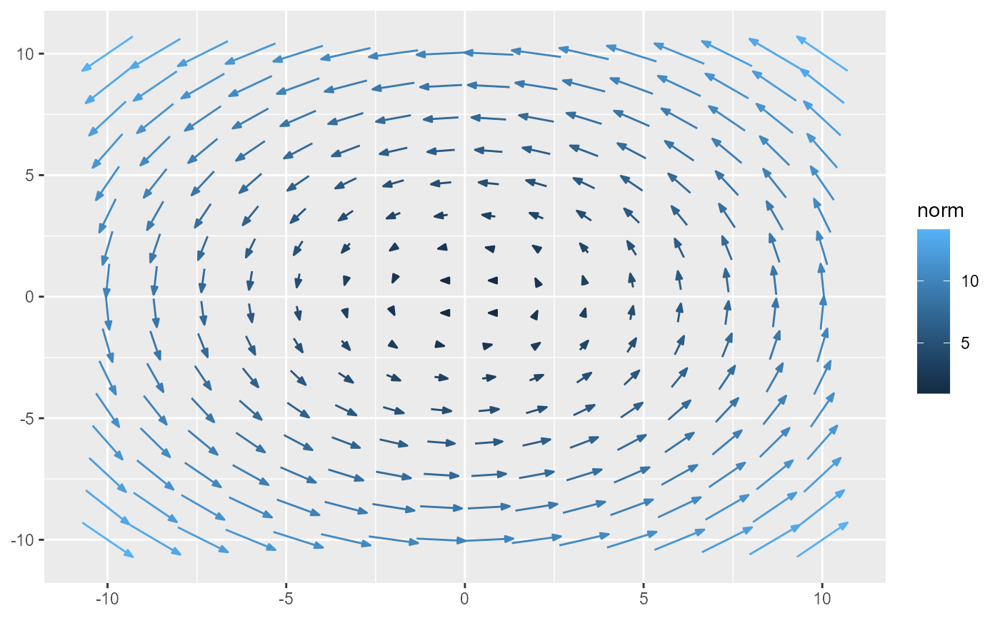

scale_length_continuous provides a continuous scale for the length
aesthetic in geom_vector_field.
Arguments
- name
The name of the scale.
- n.breaks
The number of breaks.
- guide
The guide to be used for this scale, such as a legend or color bar. Can be a string specifying the type of guide, or a guide object returned by a call to a guide function (e.g.,
guide_legendorguide_colorbar). Use"none"to hide the guide.- ...
Additional parameters passed on to
continuous_scale.
Examples
f <- function(v) {
x <- v[1]; y <- v[2]
c(-y, x)
}
ggplot() +
geom_vector_field(aes(length = after_stat(norm)), fun = f, xlim = c(-10, 10), ylim = c(-10, 10)) +
scale_length_continuous()
